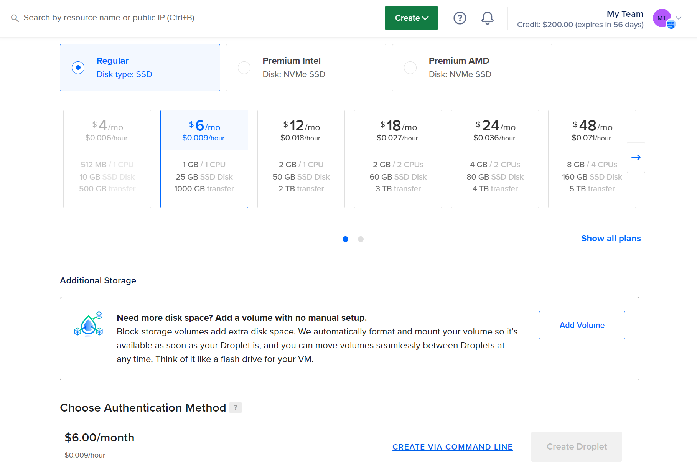
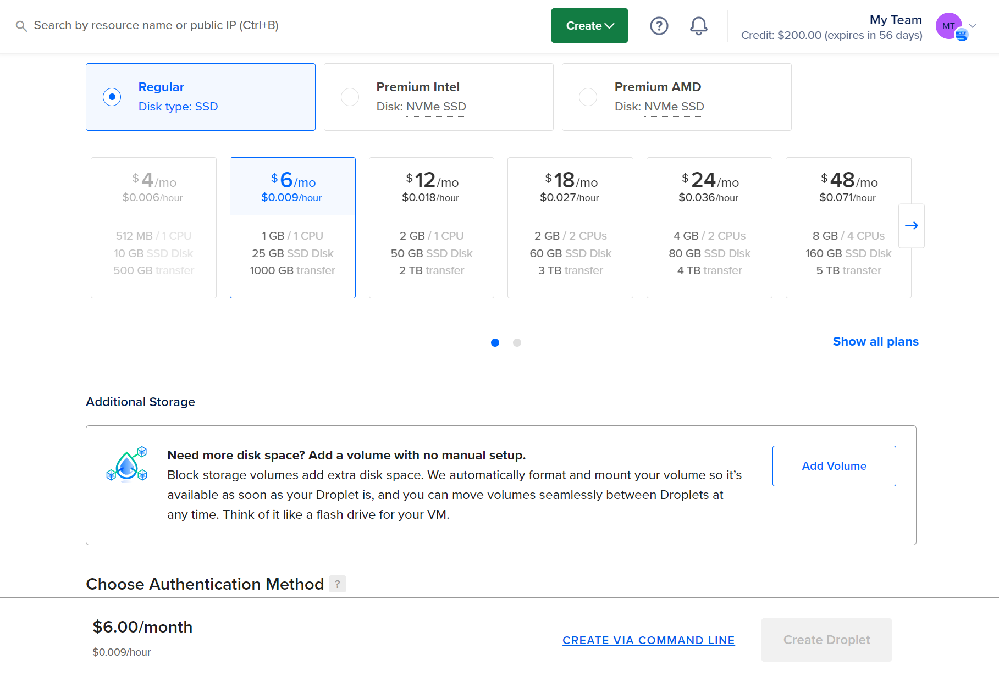

Get Started
👉Welcome to the dumb-bots and thanks for purchase.
lets start.....
If you have dumb-bot.zip file, just extract it and You will have two folder dumb-bot-api & dumb-bot
- Navigate to the dumb-bot folder and selected only dumb-bot-ui folder not a dumb-bot-api.
- create your Github account here
- Download Github Desktophere
- Create github repository
- Then Copy all the files and folders inside the dumb-bot folder and paste file into your github repository folder.
- You will see commit to main (Just Type initial commmit) in the summary box and click button
- Now goto your Github account & check repository, if all find then another process..
- Go and create digitalocean account click here and pay 400+ something then your account will be created however you don't need to worry you will get back all money you pay also you will get 200$ for free upto 60 days.
- Now click to create you droplet
- Now just click create droplet
- Now copy your ip address
 


Installation.........................
- Now click window+r key on your laptop keyboard and the type cmd and click enter
- Type like this in your command terminal !Remember to change your ip
- type yes
- Now enter your password - that your created
- Let's add user - type (adduser yourname)
- Now give permission root access to user - type usermod -aG sudo (yourname)
- Let give permission for firewall - type ufw allow OpenSSH
- Let's add firewall protection
- Now open with your user not root - click window + r and then type cmd
- Now download node js latest version
- Setup node js now
- Check if succesfully install node js in your droplet
- Now install pm2 for manage your application
- Now install nginx for reverse proxy
- Now go and add your domain
- After add domain - create sub-domain - just click on your domain name it will redirect to record
- Now setup ip - type sudo vi /etc/nginx/sites-available/myapi.example.com
- Now paste this code - click (i) to insert and then paste after paste click (esc) on keyboard and (:wq) enter !remember don't include bracket only :wq
- Activate your sub-domain
- let see the firewall permission status
- let give firewall permission to Nginx
- let's remove default app running - type all this command one by one
- let upload the file - to do that your need filezilla Download filezilla
- Go and login filezilla in Host (Your ip address), username (your name), password (username password not a root password ok) and others are same
- Nevigate to dumb-bot-api folder on the left side and right side will be your home/(your name)
- Now select all the files inside dumb-bot-api folder and upload to right side
- Now type this command
- let update all packages
- let install - yes crul
- most important - install this all packages to avoid error while execution
- Type this command to start
- then check it's working find or not - go to the your browser and visit your sub-domain
$ ssh root@ your ip number here
$ adduser ygsh
$ usermod -aG sudo ygsh
$ ufw allow OpenSSH
$ ufw enable
$ ssh yourname @ your ip number
$ curl -sL https://deb.nodesource.com/setup_14.x | sudo -E bash -
$ sudo apt-get install -y nodejs
$ node --version && npm --version
$ sudo npm i pm2 -g
$ sudo apt install nginx
$ sudo vi /etc/nginx/sites-available/myapi.example.com
server{
server_name myapi.example.com;
location / {
proxy_pass http://localhost:8001;
proxy_http_version 1.1;
proxy_set_header Upgrade $http_upgrade;
proxy_set_header Connection 'upgrade';
proxy_set_header Host $host;
proxy_cache_bypass $http_upgrade;
}
}
$ sudo ln -s /etc/nginx/sites-available/myapi.example.com /etc/nginx/sites-enabled
$ sudo ufw status
$ sudo ufw allow 'Nginx Full'
$ cd /etc/nginx/sites-enabled
$ ls
$ sudo rm default
$ npm install
$ sudo apt-get update
$ sudo apt update && sudo apt install --assume-yes curl
$ sudo apt-get install -yq gconf-service libasound2 libatk1.0-0 libc6 libcairo2
libdbus-1-3 libexpat1 libfontconfig1 libgcc1 libgconf-2-4
libglib2.0-0 libgtk-3-0 libnspr4 libpango-1.0-0
libstdc++6 libx11-6 libx11-xcb1 libxcb1 libxcomposite1
libxdamage1 libxext6 libxfixes3 libxi6 libxrandr2 libxrender1
libxtst6 ca-certificates fonts-liberation libnss3 lsb-release
wget
$ node index.js
Configuration.........................
- Now time to change your api end point - just paste your sub-domain here
- Now go to your digitalocean account and click create and navigate to app and select Github and select repository name that you upload files
- just next - next and you app will deploy automatically
- After that change your domain - go to your app and navigate to setting then you will see domain section click it and change it
- ok now it's done
https://myapi.example.com/list
Customization.....................
How to target website and customize it?
This ( const result2 = await runSearch ) you will find in api.
const result2 = await runSearch(
'https://example.com/', ----- This is a website url
'.search-page input', ----- This is a webiste search input box - target
'.search-page button', ----- This is a website search input box - submit button
'.result-item .details a' ----- This is a webiste search result - target
);
Remember - The target value much be correct to work find, Don't have idea then go and search in youtube (puppeteer Web Scraper) you will get the idea.
If you don't know - pay me 5$ extra and i will do for you.
contact me - devygsh@gmail.com
Error Handle.....................
$ reboot -f
$ pm2 start index.js
$ pm2 stop index.js
This is for 5 minute interval - every 5 minute it will restart your app for smooth search.
$ pm2 restart index.js --cron "*/5 * * * *"
$ pm2 monit
$ sudo service nginx restart
Change the Style.....................
go and check out click here